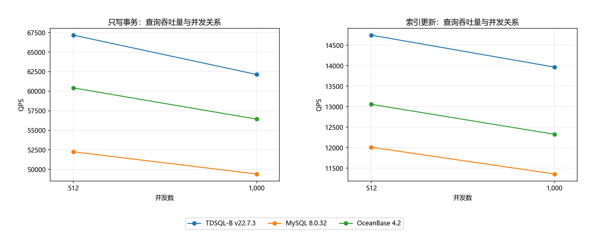
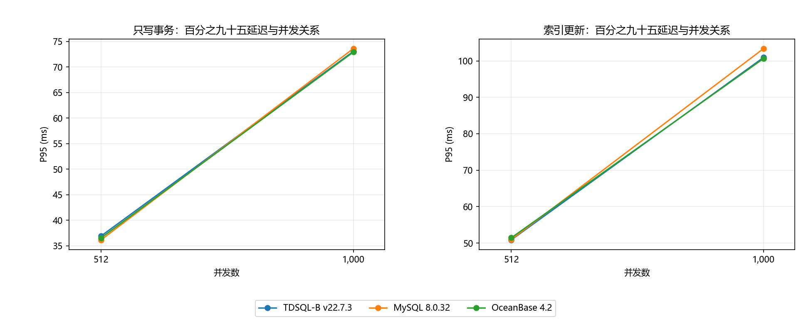
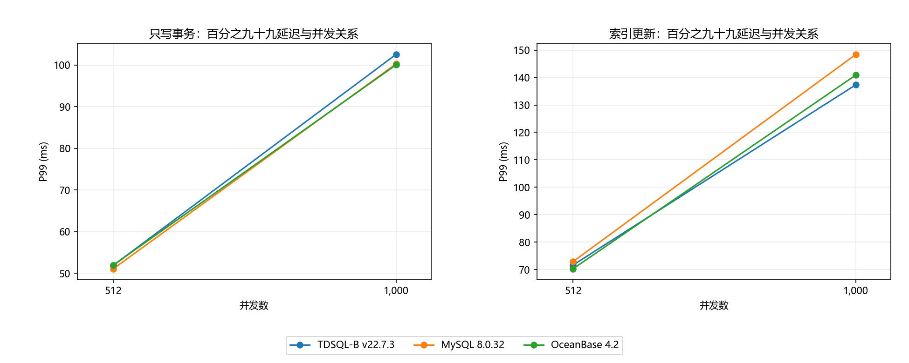

三产品写入与索引更新：512 / 1000 并发
日期：2026-06-19 版本：v1.0
仅分析三个产品在 oltp_write_only、oltp_update_index 两场景和 512、1000 并发下的 QPS、P95、P99，逐产品逐场景列出数据并给出有依据的产品选择建议。
L1 | 数据来源：data/extracted_data.json：按产品、场景、并发精确筛选
TDSQL-B 在两个场景、两档并发的四个组合中 QPS 均最高；这是本次指定数据范围内的吞吐量结论。
L2 | 数据来源：data/extracted_data.json：按产品、场景、并发精确筛选
三产品在每个指定场景由 512 增至 1,000 并发均出现 QPS 下降和 P95/P99 上升；在这两档中优先评估 512 并发。
L1 | 数据来源：data/extracted_data.json：按产品、场景、并发精确筛选
不确定性：每个产品×场景×并发只有一个聚合结果，没有重复试验或置信区间；细小延迟差不能作为稳定优势的证明。
| 场景 | 并发 | 最高 QPS 产品 | QPS |
|---|---|---|---|
| oltp_write_only | 512 | TDSQL-B v22.7.3 | 67,175.43 |
| oltp_write_only | 1,000 | TDSQL-B v22.7.3 | 62,141.15 |
| oltp_update_index | 512 | TDSQL-B v22.7.3 | 14,746.99 |
| oltp_update_index | 1,000 | TDSQL-B v22.7.3 | 13,965.57 |
唯一数据源为 data/compare.json。文件内 source_info.value 指向历史聚合来源，属于输入元数据；本报告未访问该历史路径，实际来源以当前文件及其 SHA-256 为准。
报告时间固定为 2026-06-19 16:00:00 +08:00。测试发生于 2026-06-11，三个产品起始时间分别见下表。
| 产品 | 开始时间 | 数据集 | 时长（秒） |
|---|---|---|---|
| TDSQL-B v22.7.3 | 2026-06-11 09:30:00 | tables=16, table_size=1000000 | 300 |
| MySQL 8.0.32 | 2026-06-11 13:30:00 | tables=16, table_size=1000000 | 300 |
| OceanBase 4.2 | 2026-06-11 17:30:00 | tables=16, table_size=1000000 | 300 |
| 环境项 | 输入披露值 |
|---|---|
| CPU | Intel(R) Xeon(R) Gold 6133 @ 2.50GHz, 64 cores |
| Memory | 256GB DDR4 |
| Disk | NVMe SSD 3.84TB |
| Network | 25Gbps |
| OS | TencentOS Server 3.1 |
| sysbench_version | 1.0.20 |
输入共 90 条记录，按场景 OR 条件与并发集合精确筛选后共 12 条，等于 3 产品 × 2 场景 × 2 并发。每个产品×场景完整覆盖 512、1000。仅对 QPS、P95、P99 进行展示和分析，未将其他场景或并发档用于任何结论。
QPS 单位为查询/秒，越高越好；P95、P99 单位为毫秒，越低越好。延迟沿用文件中的统计口径；未提供原始延迟分布，不能重新估计分位数。所有表格保留原始两位小数并使用千分位，计算使用未舍入值。
质量门控已核验全部 12 条记录，所需指标无空值，组合键无重复，三产品覆盖完全相同。TPS 只保留于标准接入数据并检查完整性，不作为本次分析指标。
INFO：数据集均为 tables=16, table_size=1000000，时长均为 300 秒；两场景两并发档在三产品上完全对齐。
WEAK：仅提供一份共享硬件说明，缺少逐产品部署拓扑、数据库参数、重复试验及误差范围；公平性仅在已披露字段上成立。
假设文件中的场景定义、查询计数及延迟统计方法在产品间一致。输入未披露各产品独立资源分配、持久化策略、复制配置或故障状态，不能确认它们完全一致。比较只适用于已给定版本和此次记录，不能据此给出成本、可靠性或其他负载的排序。
| 场景 | 并发 | QPS | P95（ms） | P99（ms） |
|---|---|---|---|---|
| oltp_write_only | 512 | 67,175.43 | 36.92 | 51.88 |
| oltp_write_only | 1,000 | 62,141.15 | 73.08 | 102.59 |
| oltp_update_index | 512 | 14,746.99 | 50.85 | 71.63 |
| oltp_update_index | 1,000 | 13,965.57 | 100.99 | 137.41 |
L1 | 数据来源：data/extracted_data.json：按产品、场景、并发精确筛选
TDSQL-B v22.7.3，oltp_write_only：并发 512→1,000，QPS 67,175.43→62,141.15（-7.49%）；P95 36.92→73.08 ms（+97.94%）；P99 51.88→102.59 ms（+97.74%）。
L1 | 数据来源：data/extracted_data.json：按产品、场景、并发精确筛选
TDSQL-B v22.7.3，oltp_update_index：并发 512→1,000，QPS 14,746.99→13,965.57（-5.30%）；P95 50.85→100.99 ms（+98.60%）；P99 71.63→137.41 ms（+91.83%）。
| 场景 | 并发 | QPS | P95（ms） | P99（ms） |
|---|---|---|---|---|
| oltp_write_only | 512 | 52,251.17 | 36.16 | 51.07 |
| oltp_write_only | 1,000 | 49,414.16 | 73.64 | 100.31 |
| oltp_update_index | 512 | 12,009.86 | 50.95 | 72.89 |
| oltp_update_index | 1,000 | 11,356.38 | 103.42 | 148.48 |
L1 | 数据来源：data/extracted_data.json：按产品、场景、并发精确筛选
MySQL 8.0.32，oltp_write_only：并发 512→1,000，QPS 52,251.17→49,414.16（-5.43%）；P95 36.16→73.64 ms（+103.65%）；P99 51.07→100.31 ms（+96.42%）。
L1 | 数据来源：data/extracted_data.json：按产品、场景、并发精确筛选
MySQL 8.0.32，oltp_update_index：并发 512→1,000，QPS 12,009.86→11,356.38（-5.44%）；P95 50.95→103.42 ms（+102.98%）；P99 72.89→148.48 ms（+103.70%）。
| 场景 | 并发 | QPS | P95（ms） | P99（ms） |
|---|---|---|---|---|
| oltp_write_only | 512 | 60,428.22 | 36.55 | 51.93 |
| oltp_write_only | 1,000 | 56,430.79 | 72.95 | 100.08 |
| oltp_update_index | 512 | 13,057.94 | 51.43 | 70.27 |
| oltp_update_index | 1,000 | 12,325.56 | 100.69 | 140.96 |
L1 | 数据来源：data/extracted_data.json：按产品、场景、并发精确筛选
OceanBase 4.2，oltp_write_only：并发 512→1,000，QPS 60,428.22→56,430.79（-6.62%）；P95 36.55→72.95 ms（+99.59%）；P99 51.93→100.08 ms（+92.72%）。
L1 | 数据来源：data/extracted_data.json：按产品、场景、并发精确筛选
OceanBase 4.2，oltp_update_index：并发 512→1,000，QPS 13,057.94→12,325.56（-5.61%）；P95 51.43→100.69 ms（+95.78%）；P99 70.27→140.96 ms（+100.60%）。
L1 | 数据来源：data/extracted_data.json：按产品、场景、并发精确筛选
oltp_write_only，并发 512：QPS 最高为 TDSQL-B v22.7.3（67,175.43）；P95 最低为 MySQL 8.0.32（36.16 ms）；P99 最低为 MySQL 8.0.32（51.07 ms）。 TDSQL-B 相对 MySQL 8.0.32 的 QPS 高 28.56%；OceanBase 4.2 的 QPS 高 11.17%。
L1 | 数据来源：data/extracted_data.json：按产品、场景、并发精确筛选
oltp_write_only，并发 1,000：QPS 最高为 TDSQL-B v22.7.3（62,141.15）；P95 最低为 OceanBase 4.2（72.95 ms）；P99 最低为 OceanBase 4.2（100.08 ms）。 TDSQL-B 相对 MySQL 8.0.32 的 QPS 高 25.76%；OceanBase 4.2 的 QPS 高 10.12%。
L1 | 数据来源：data/extracted_data.json：按产品、场景、并发精确筛选
oltp_update_index，并发 512：QPS 最高为 TDSQL-B v22.7.3（14,746.99）；P95 最低为 TDSQL-B v22.7.3（50.85 ms）；P99 最低为 OceanBase 4.2（70.27 ms）。 TDSQL-B 相对 MySQL 8.0.32 的 QPS 高 22.79%；OceanBase 4.2 的 QPS 高 12.94%。
L1 | 数据来源：data/extracted_data.json：按产品、场景、并发精确筛选
oltp_update_index，并发 1,000：QPS 最高为 TDSQL-B v22.7.3（13,965.57）；P95 最低为 OceanBase 4.2（100.69 ms）；P99 最低为 TDSQL-B v22.7.3（137.41 ms）。 TDSQL-B 相对 MySQL 8.0.32 的 QPS 高 22.98%；OceanBase 4.2 的 QPS 高 13.31%。
每图分为两个独立场景面板，不跨场景求和或平均。三条线对应三个产品；连接两个观测点仅用于呈现变化，不表示未测试并发的预测值。QPS 图为主图，P95 图为并发档位延迟对照图，P99 图为尾延迟验证图。

图：查询吞吐量在两档并发下的逐场景对照；QPS 越高越好，延迟越低越好。

图：百分之九十五延迟在两档并发下的逐场景对照；QPS 越高越好，延迟越低越好。

图：百分之九十九延迟在两档并发下的逐场景对照；QPS 越高越好，延迟越低越好。
吞吐优先：在本次四个组合中选择 TDSQL-B v22.7.3 作为首选候选。具体领先幅度见 3.4、3.5；这项建议以业务接受其对应 P95/P99 为前提，不能仅因 QPS 排名第一就忽略延迟门槛。
oltp_write_only，512 并发：MySQL 的 P95、P99 均最低；若延迟优先，可把 MySQL 作为候选。TDSQL-B 吞吐量最高；OceanBase 的吞吐介于两者之间，应逐项按业务门槛取舍。TDSQL-B v22.7.3：QPS=67,175.43，P95=36.92 ms，P99=51.88 ms；MySQL 8.0.32：QPS=52,251.17，P95=36.16 ms，P99=51.07 ms；OceanBase 4.2：QPS=60,428.22，P95=36.55 ms，P99=51.93 ms。
oltp_write_only，1000 并发：OceanBase P95、P99 均最低，同时 QPS 高于 MySQL；在这三个指标上本次记录均优于 MySQL。TDSQL-B QPS 更高，但 P95、P99 也更高，因此吞吐优先与尾延迟优先会产生不同选择。TDSQL-B v22.7.3：QPS=62,141.15，P95=73.08 ms，P99=102.59 ms；MySQL 8.0.32：QPS=49,414.16，P95=73.64 ms，P99=100.31 ms；OceanBase 4.2：QPS=56,430.79，P95=72.95 ms，P99=100.08 ms。
oltp_update_index，512 并发：TDSQL-B QPS、P95 领先，且 P99 低于 MySQL。OceanBase P99 最低。优先吞吐与 P95 时选 TDSQL-B；P99 为硬约束时再比较 OceanBase。TDSQL-B v22.7.3：QPS=14,746.99，P95=50.85 ms，P99=71.63 ms；MySQL 8.0.32：QPS=12,009.86，P95=50.95 ms，P99=72.89 ms；OceanBase 4.2：QPS=13,057.94，P95=51.43 ms，P99=70.27 ms。
oltp_update_index，1000 并发：TDSQL-B QPS、P99 最优，OceanBase P95 略低于 TDSQL-B。MySQL 的三个指标在本次记录均落后于另外两者。吞吐与 P99 优先选择 TDSQL-B，P95 优先保留 OceanBase 验证。TDSQL-B v22.7.3：QPS=13,965.57，P95=100.99 ms，P99=137.41 ms；MySQL 8.0.32：QPS=11,356.38，P95=103.42 ms，P99=148.48 ms；OceanBase 4.2：QPS=12,325.56，P95=100.69 ms，P99=140.96 ms。
并发建议：在已测试的两档中优先选择 512 并发作为容量验证起点；增加到 1000 时所有产品、两个场景都没有带来 QPS 增益，反而增加两项尾延迟。该结论仅覆盖这两档，不能称为全局最优并发或推断性能拐点位置。
决策步骤：先明确两个场景各自需要的最低 QPS、最高 P95、最高 P99，再从相同场景相同并发的表格筛选全部达标候选。用户未提供 SLA，因此本报告不代设阈值。若多产品均达标，需补充成本和运维信息后决策，现有数据不支持性价比结论。
所有数值优势均为这份文件的观测事实，不代表统计显著性。单个聚合值无法衡量波动、长时间稳定性或极端异常。尤其不足 1 ms 的 P95 差异，应通过重复试验确认后再影响采购或切换决策。
本报告不合并不同场景的指标，不生成综合评分。两个场景的查询组成不同，QPS 不能直接作为跨场景业务价值的可比单位，也不能对两档 P95/P99 取平均作为整体分位数。
针对候选产品重复执行同场景同并发试验，保留每轮原始日志与延迟分布，并补齐每产品硬件、拓扑及关键数据库参数。以实际业务 SLA 验证候选；未有这些结果前，本报告不认定微小延迟差为可复现优势。
如需确定容量上限，应在新一轮测试中补充并发档并观测资源指标。本次未对任何未指定的档位做分析，也无法由两个点定位 CPU、锁、日志或存储瓶颈。
原始文件：data/compare.json；SHA-256：4640ff7f9fa4fc1cf7c9e964798fa1fa337fc2b96782f16ff0f06c9fd58bc514
并发变化率 =（1000 并发指标 ÷ 512 并发指标 − 1）× 100%；同档 QPS 领先率 =（TDSQL-B QPS ÷ 对照产品 QPS − 1）× 100%。所有运算由 Python 对筛选后的原始记录直接执行。
原始 sysbench 命令未提供，未补写或猜测可复现命令。报告生成脚本为 artifacts/build.py；三格式共享 report_data.json 并分别渲染，未使用格式转换工具。
report.md 为文本核对主本；report.docx 用于编辑；report.html 用于浏览，浏览时保持 charts 文件夹相对位置。data/ 含意图、筛选记录、计算结果、洞察及核查结果；docs/analysis_proposal.md 记录范围和完成状态。
用户限定范围优先于最小交付标准 D5 的全并发档默认要求；本报告完整覆盖用户指定的两档。custom 只对指定两个场景绘图，其他三个场景验证图不适用。未采用任何 L3 推测性结论，避免将未经验证的性能原因作为选型依据。